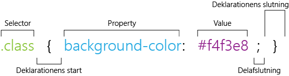
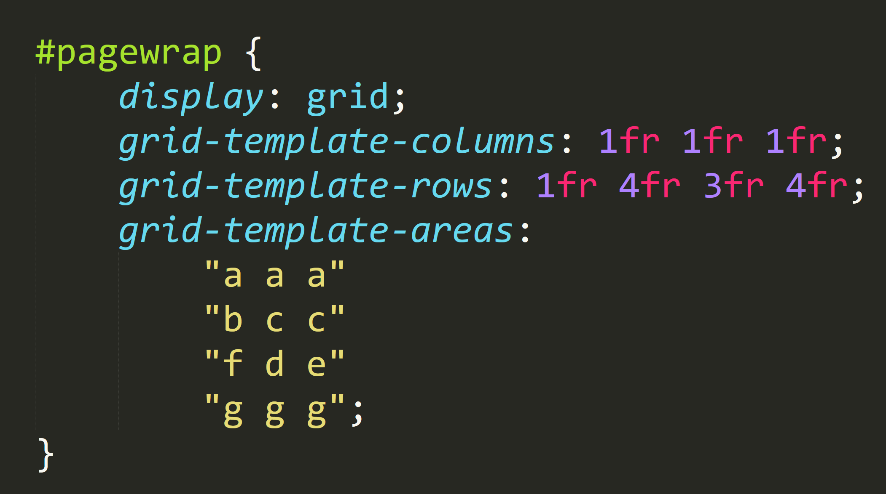

CSS
HTML udgør et websites funktionalitet, men stylingmulighederne er ganske begrænsede, og derfor kræver det noget ekstra for at lave et visuelt website. Det ”ekstra” er CSS, der er en forkortelse af Cascading Style Sheets. Det er altså et sprog, der definerer og beskriver udseendet af et website. Man kan bruge CSS på tre forskellige måder, men ikke alle er lige gode.
- Inline
- CSS-koden er skrevet direkte i HTML-dokumentet, men det betyder, at al form for struktur forsvinder. Desuden kan et HTML-dokument bruges i mange år, men designtrends er hyppigt skiftende, og derfor letter det arbejdet, hvis CSS-koden placeres i et separat dokument.
- Embedded
- CSS-koden skrives øverst i HTML-dokumentet. Det bevarer struktur og giver overblik, men ulempen er, at stylesheetet kun gælder for det ene dokument.
- Link
- CSS-koden skrives i et helt separat dokument. Det betyder, at der i HTML-dokumentet blot skal linkes til CSS-dokumentet. Ved at have sit stylesheet i et separat dokument er det også lettere at rette deri og tilpasse det.
Ligesom et HTML-element består et CSS-element af flere dele; en selector, to kurvede parenteser, en property, en value og et semikolon.
Property angiver, hvilken ændring, der skal foretages – eksempelvis at baggrundsfarven skal ændres.
Value angiver, hvad der specifikt skal ændres – eksempelvis skal baggrundsfarven være sart gul.
De kurvede parenteser afgrænser den nye styling til de forskellige selectors.
Selectoren udpeger den specifikke del, der skal styles. Der findes flere forskellige, og de har hver sin funktion. To af disse er .class og #id, der begge hjælper med at strukturere dokumentet, og desuden bliver det lettere at style sit dokument. Eksempelvis kan man give alle deloverskrifter en class, og derved får alle deloverskrifter samme styling. Hvis der er så er behov for at ændre tre specifikke deloverskrifter, kan man give disse et id. På grund af kaskadereglerne trumfer #id over .class, og det giver mulighed for at #id kan ændre netop den ene underoverskrift. Kaskadereglerne gør sig gældende ved, at det der står til sidst i stylesheetet, er det, der gælder.
CSS Grid Model
Nogle mener, at CSS Grid er noget af det mest revolutionerende indenfor webdesign siden responsive websites, og der er en god grund hertil. For det første er det let at bruge, og for det andet er det lettere at gøre et website responsivt ved at benytte CSS Grid.
Man kan tilnærmelsesvis sige, at CSS Grid minder om tabeller, for det er næsten sådan det opbygges. Indholdet skal nemlig opdeles i columns og rows, og herefter skal hvert element opdeles i fractions (fr).
